Tutorial for Introductory Analysis of Daily Precipitation Data with hydroTSM
Mauricio Zambrano-Bigiarini1
version 0.9, 16-Jan-2024
Source:vignettes/hydroTSM_Vignette-knitr.Rmd
hydroTSM_Vignette-knitr.RmdInstallation
Installing the latest stable version (from CRAN):
install.packages("hydroTSM")Alternatively, you can also try the under-development version (from Github):
if (!require(devtools)) install.packages("devtools")
library(devtools)
install_github("hzambran/hydroTSM")Setting up the environment
Loading the hydroTSM pacakge, which contains data and functions used in this analysis.
## Loading required package: zoo##
## Attaching package: 'zoo'## The following objects are masked from 'package:base':
##
## as.Date, as.Date.numericLoading daily precipitation data at the station San Martino di Castrozza, Trento Province, Italy, from 01/Jan/1921 to 31/Dec/1990.
data(SanMartinoPPts)Selecting only a 6-years time slice for the analysis
Dates of the daily values of ‘x’
dates <- time(x)Amount of years in ‘x’ (needed for computations)
## [1] 6Global view of daily precipitation values a calendar heatmap (six years maximum), useful for visually identifying dry, normal and wet days:
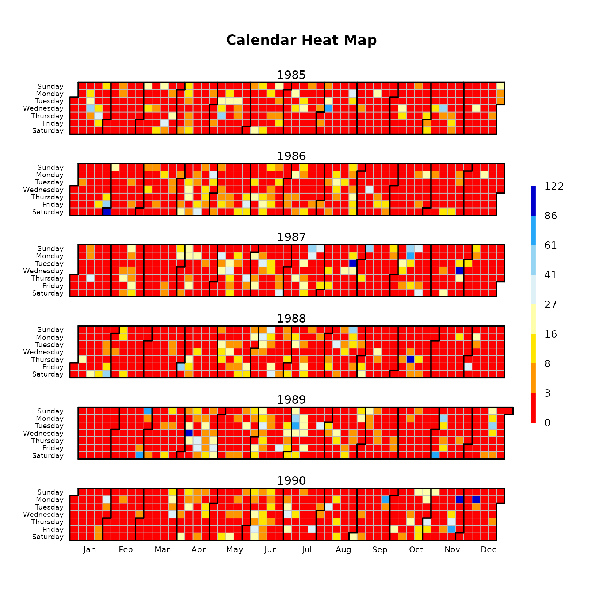
Basic exploratory data analysis (EDA)
- Summary statistics
smry(x)## Index x
## Min. 1985-01-01 0.0000
## 1st Qu. 1986-07-02 0.0000
## Median 1988-01-01 0.0000
## Mean 1988-01-01 3.7470
## 3rd Qu. 1989-07-01 2.6000
## Max. 1990-12-31 122.0000
## IQR <NA> 2.6000
## sd <NA> 10.0428
## cv <NA> 2.6800
## Skewness <NA> 5.3512
## Kurtosis <NA> 39.1619
## NA's <NA> 0.0000
## n <NA> 2191.0000- Using the hydroplot function, which (by default) plots 9 different graphs: 3 ts plots, 3 boxplots and 3 histograms summarizing ‘x’. For this example, only daily and monthly plots are produced, and only data starting on 01-Jan-1987 are plotted.
hydroplot(x, var.type="Precipitation", main="at San Martino",
pfreq = "dm", from="1987-01-01")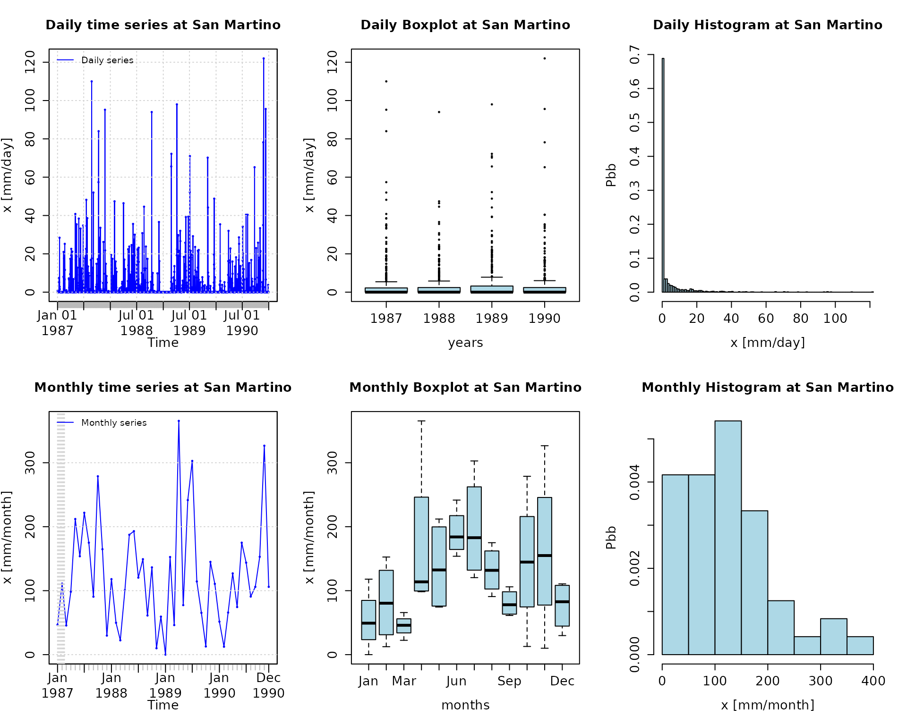
- Amount of days with information (not NA) per year
dwi(x)## 1985 1986 1987 1988 1989 1990
## 365 365 365 366 365 365- Amount of days with information (not NA) per month per year
dwi(x, out.unit="mpy")## Jan Feb Mar Apr May Jun Jul Aug Sep Oct Nov Dec
## 1985 31 28 31 30 31 30 31 31 30 31 30 31
## 1986 31 28 31 30 31 30 31 31 30 31 30 31
## 1987 31 28 31 30 31 30 31 31 30 31 30 31
## 1988 31 29 31 30 31 30 31 31 30 31 30 31
## 1989 31 28 31 30 31 30 31 31 30 31 30 31
## 1990 31 28 31 30 31 30 31 31 30 31 30 31- Plotting the monthly precipitation values for each year, useful for identifying dry/wet months.
# Daily zoo to monthly zoo
m <- daily2monthly(x, FUN=sum, na.rm=TRUE)
# Creating a matrix with monthly values per year in each column
M <- matrix(m, ncol=12, byrow=TRUE)
colnames(M) <- month.abb
rownames(M) <- unique(format(time(m), "%Y"))
# Plotting the monthly precipitation values
require(lattice)## Loading required package: lattice
print(matrixplot(M, ColorRamp="Precipitation",
main="Monthly precipitation at San Martino st., [mm/month]"))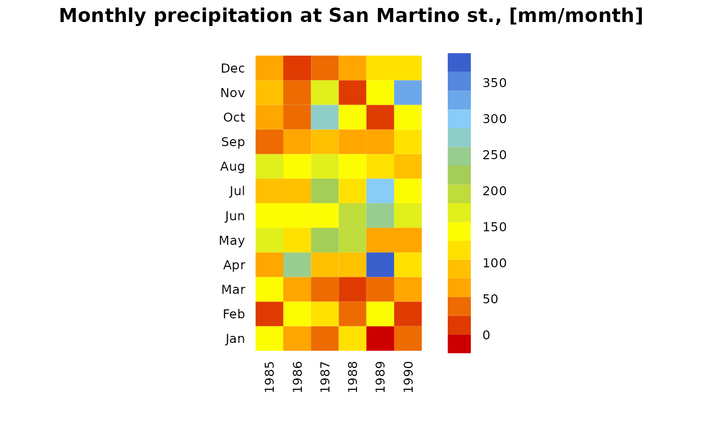
- Computation of monthly values only when the percentage of NAs in each month is lower than a user-defined percentage (10% in this example).
# Loading the DAILY precipitation data at SanMartino
data(SanMartinoPPts)
y <- SanMartinoPPts
# Subsetting 'y' to its first three months (Jan/1921 - Mar/1921)
y <- window(y, end="1921-03-31")
## Transforming into NA the 10% of values in 'y'
set.seed(10) # for reproducible results
n <- length(y)
n.nas <- round(0.1*n, 0)
na.index <- sample(1:n, n.nas)
y[na.index] <- NA
## Daily to monthly, only for months with less than 10% of missing values
(m2 <- daily2monthly(y, FUN=sum, na.rm=TRUE, na.rm.max=0.1))## 1921-01-01 1921-02-01 1921-03-01
## 102 NA NA
# Verifying that the second and third month of 'x' had 10% or more of missing values
cmv(y, tscale="month")## 1921-01 1921-02 1921-03
## 0.065 0.107 0.129Annual analysis
Annual values of precipitation
daily2annual(x, FUN=sum, na.rm=TRUE)## 1985-01-01 1986-01-01 1987-01-01 1988-01-01 1989-01-01 1990-01-01
## 1154.8 1152.8 1628.4 1207.8 1634.2 1432.4Average annual precipitation
Obvious way:
mean( daily2annual(x, FUN=sum, na.rm=TRUE) )## [1] 1368.4Another way (more useful for streamflows, where FUN=mean):
The function annualfunction applies FUN twice over x:
( i) firstly, over all the elements of x belonging to the same year, in order to obtain the corresponding annual values, and (ii) secondly, over all the annual values of x previously obtained, in order to obtain a single annual value.
annualfunction(x, FUN=sum, na.rm=TRUE) / nyears## value
## 1368.4Monthly analysis
Median of the monthly values at station ‘x’. Not needed, just for looking at these values in the boxplot.
monthlyfunction(m, FUN=median, na.rm=TRUE)## Jan Feb Mar Apr May Jun Jul Aug Sep Oct Nov Dec
## 63.7 80.4 52.9 113.8 141.9 164.4 132.1 145.1 67.6 97.4 123.4 57.1Vector with the three-letter abbreviations for the month names
Creating ordered monthly factors
Boxplot of the monthly values
boxplot( coredata(m) ~ months, col="lightblue", main="Monthly Precipitation",
ylab="Precipitation, [mm]", xlab="Month")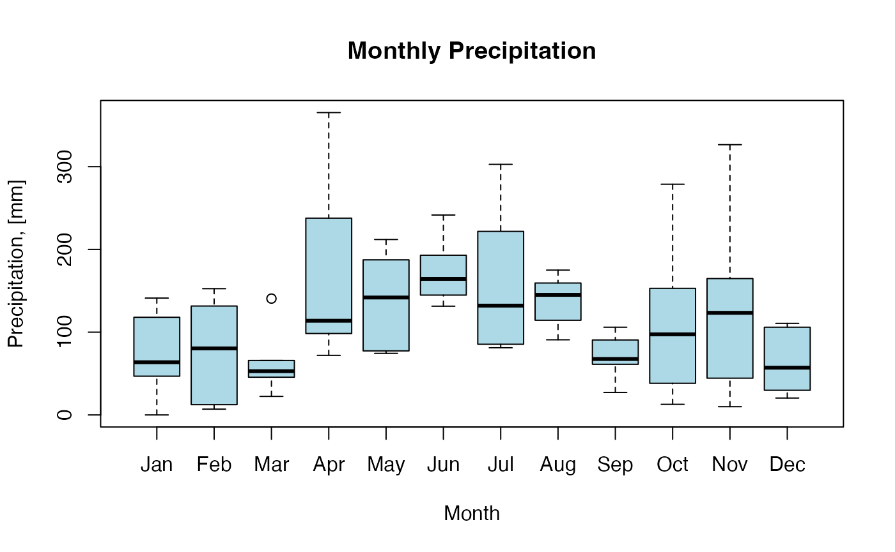
Seasonal analysis
Average seasonal values of precipitation
seasonalfunction(x, FUN=sum, na.rm=TRUE) / nyears## DJF MAM JJA SON
## 213.1333 369.4000 470.8000 315.0667Extracting the seasonal values for each year
( DJF <- dm2seasonal(x, season="DJF", FUN=sum) )## 1985 1986 1987 1988 1989 1990
## 148.2 262.2 178.2 197.6 212.0 174.6
( MAM <- dm2seasonal(m, season="MAM", FUN=sum) )## 1985 1986 1987 1988 1989 1990
## 388.2 405.6 356.0 310.4 489.0 267.2
( JJA <- dm2seasonal(m, season="JJA", FUN=sum) )## 1985 1986 1987 1988 1989 1990
## 376.2 367.0 550.6 462.6 658.8 409.6
( SON <- dm2seasonal(m, season="SON", FUN=sum) )## 1985 1986 1987 1988 1989 1990
## 187.4 152.4 534.2 207.6 223.2 585.6Plotting the time evolution of the seasonal precipitation values
hydroplot(x, pfreq="seasonal", FUN=sum, stype="default")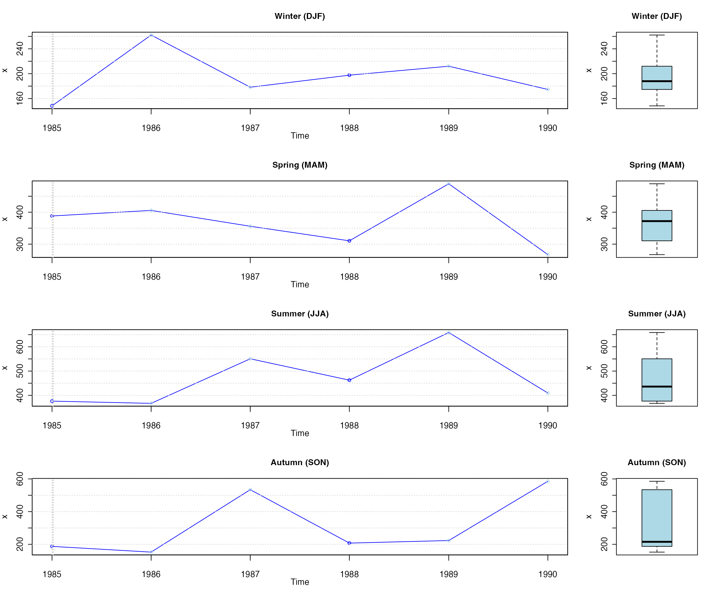
Some extreme indices
Common steps for the analysis of this section:
Loading daily precipitation data at the station San Martino di Castrozza, Trento Province, Italy, with data from 01/Jan/1921 to 31/Dec/1990.
data(SanMartinoPPts)Selecting only a three-year time slice for the analysis
Plotting the selected time series
hydroplot(x, ptype="ts", pfreq="o", var.unit="mm")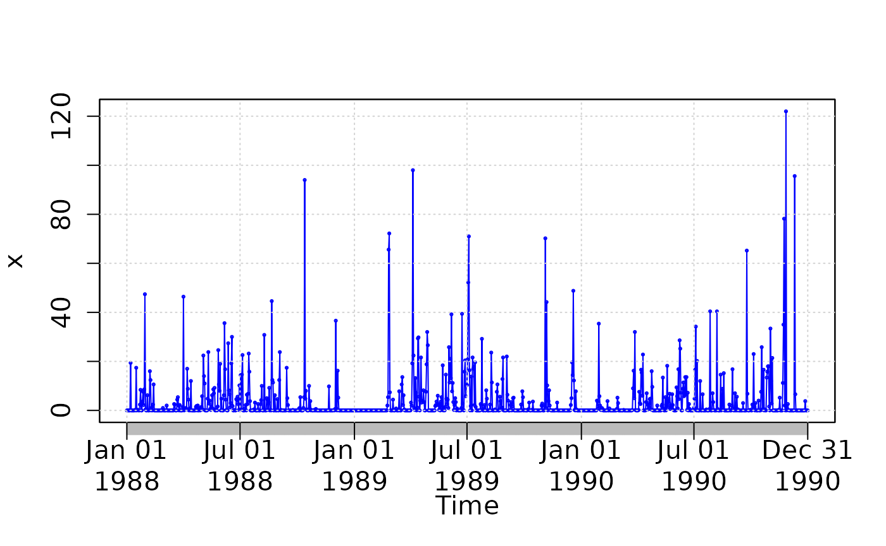
Seasonality index
Counting and plotting the number of days in the period where precipitation is > 10 [mm]:
si(x)## [1] 0.3866742According to the seasonality index defined by Walsh and Lawler (1981), a value of 0.39 corresponds to a precipitation regime that can be classified as “Equable but with a definite wetter season” (see more details with ?si).
Heavy precipitation days (R10mm)
Counting and plotting the number of days in the period where precipitation is > 10 [mm]:
( R10mm <- length( x[x>10] ) )## [1] 127Very wet days (R95p)
Identifying the wet days (daily precipitation >= 1 mm):
wet.index <- which(x >= 1)Computing the 95th percentile of precipitation on wet days (PRwn95):
( PRwn95 <- quantile(x[wet.index], probs=0.95, na.rm=TRUE) )## 95%
## 39.75Note 1: this computation was carried out for the three-year time period 1988-1990, not the 30-year period 1961-1990 commonly used.
Note 2: missing values are removed from the computation.
Identifying the very wet days (daily precipitation >= PRwn95):
(very.wet.index <- which(x >= PRwn95))## [1] 30 92 234 287 422 423 461 550 551 674 676 719 939 950 998
## [16] 1058 1061 1075Computing the total precipitation on the very wet days:
( R95p <- sum(x[very.wet.index]) )## [1] 1196.4Note 3: this computation was carried out for the three-year time period 1988-1990, not the 30-year period 1961-1990 commonly used
5-day total precipitation
Computing the 5-day total (accumulated) precipitation:
x.5max <- rollapply(data=x, width=5, FUN=sum, fill=NA, partial= TRUE,
align="center")
hydroplot(x.5max, ptype="ts+boxplot", pfreq="o", var.unit="mm")## [Note: pfreq='o' => ptype has been changed to 'ts']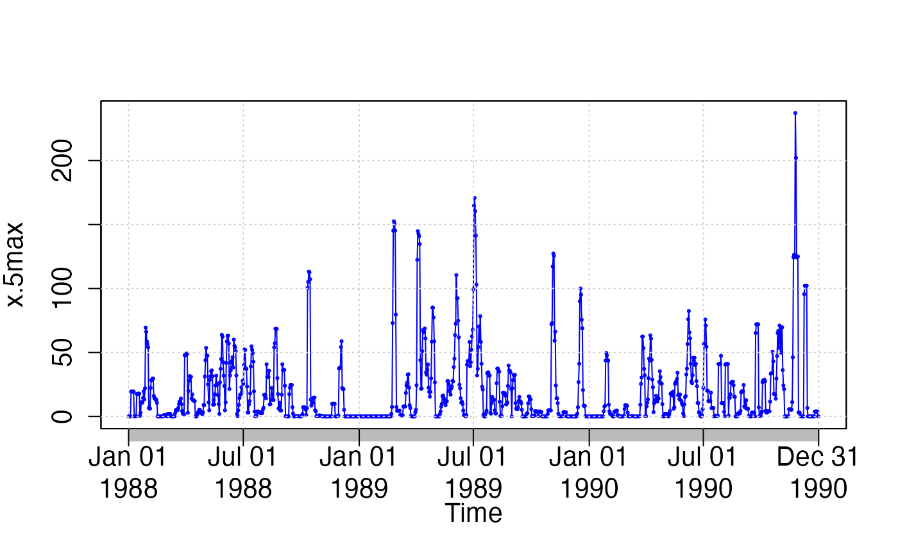
Maximum annual value of 5-day total precipitation:
(x.5max.annual <- daily2annual(x.5max, FUN=max, na.rm=TRUE))## 1988-10-13 1989-07-03 1990-11-24
## 113.2 170.8 237.2Note 1: for this computation, a moving window centred in the current day is used. If the user wants the 5-day total precipitation accumulated in the 4 days before the current day + the precipitation in the current day, the user have to modify the moving window.
Note 2: For the first two and last two values, the width of the window is adapted to ignore values not within the time series
Climograph
Since v0.5-0, hydroTSM includes a function to plot a climograph, considering not only precipitation but air temperature data as well.
# Loading daily ts of precipitation, maximum and minimum temperature
data(MaquehueTemuco)
# extracting individual ts of precipitation, maximum and minimum temperature
pcp <- MaquehueTemuco[, 1]
tmx <- MaquehueTemuco[, 2]
tmn <- MaquehueTemuco[, 3]Plotting a full climograph:
m <- climograph(pcp=pcp, tmx=tmx, tmn=tmn, na.rm=TRUE,
main="Maquehue Temuco Ad (Chile)", lat=-38.770, lon=-72.637)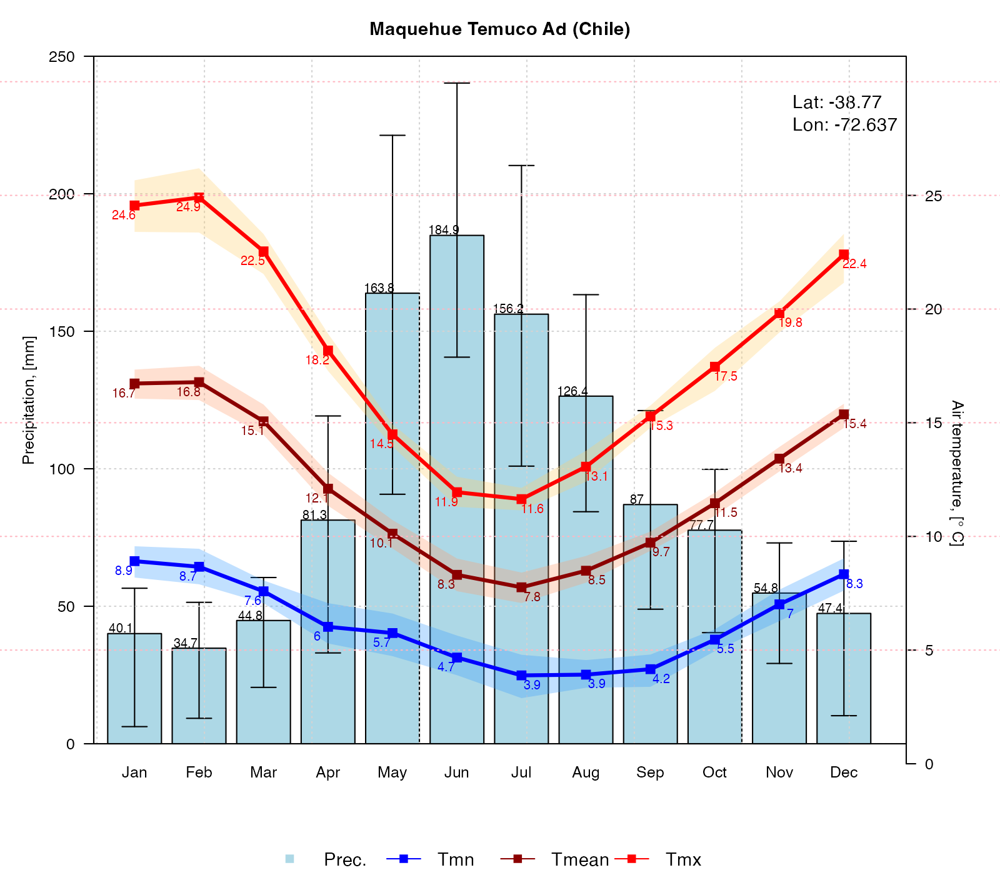
Plotting a climograph with uncertainty bands around mean values, but with no labels for tmx and tmn:
m <- climograph(pcp=pcp, tmx=tmx, tmn=tmn, na.rm=TRUE, tmx.labels=FALSE, tmn.labels=FALSE,
main="Maquehue Temuco Ad (Chile)", lat=-38.770, lon=-72.637)
Plotting a climograph with uncertainty bands around mean values, but with no labels for tmx, tmn and pcp:
m <- climograph(pcp=pcp, tmx=tmx, tmn=tmn, na.rm=TRUE,
pcp.labels=FALSE, tmean.labels=FALSE, tmx.labels=FALSE, tmn.labels=FALSE,
main="Maquehue Temuco Ad (Chile)", lat=-38.770, lon=-72.637)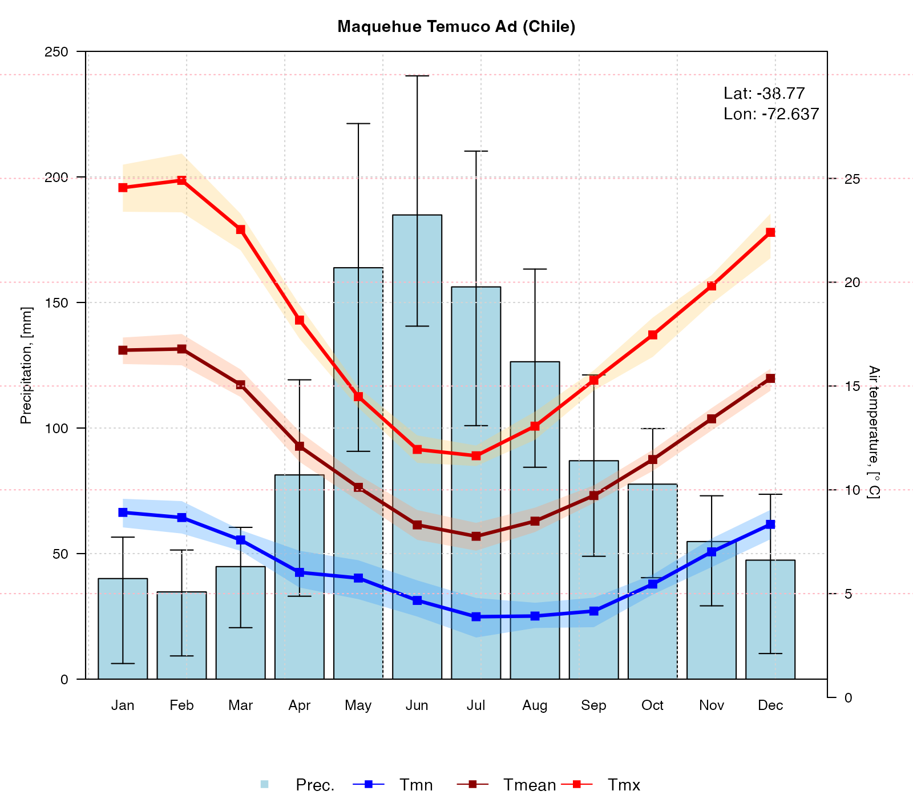
To better represent the hydrological year in Chile (South America), the following figure will plot a full climograph starting in April (start.month=4) instead of January (start.month=1):
m <- climograph(pcp=pcp, tmx=tmx, tmn=tmn, na.rm=TRUE,
start.month=4, temp.labels.dx=c(rep(-0.2,4), rep(0.2,6),rep(-0.2,2)),
main="Maquehue Temuco Ad (Chile)", lat=-38.770, lon=-72.637)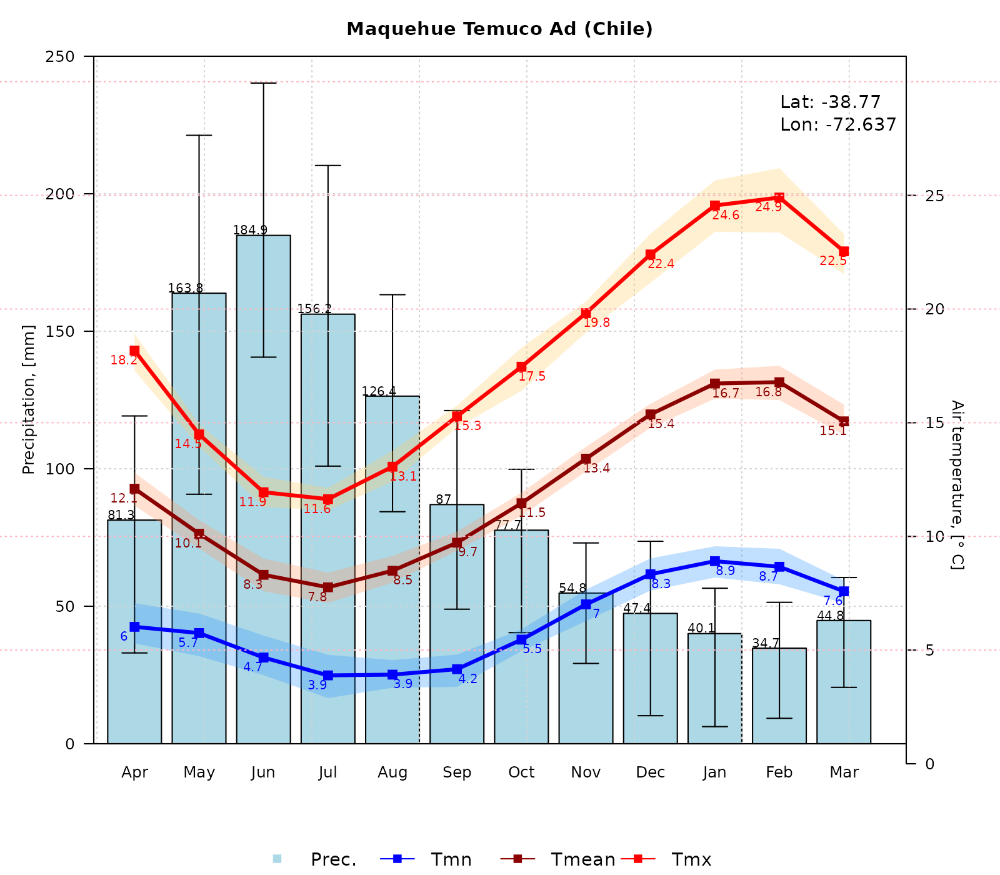
Software details
This tutorial was built under:
## [1] "x86_64-pc-linux-gnu (64-bit)"## [1] "R version 4.3.2 (2023-10-31)"## [1] "hydroTSM 0.6-33"Version history
- v0.9: Jan 2024
- v0.8: Nov 2023
- v0.7: Mar 2020
- v0.6: Aug 2017
- v0.5: May 2013
- v0.4: Aug 2011
- v0.3: Apr 2011
- v0.2: Oct 2010
- v0.1: 30-May-2013
Appendix
In order to make easier the use of for users not familiar with R, in this section a minimal set of information is provided to guide the user in the R world.
Editors, GUI
Multi-platform: Sublime Text (https://sublime.weberup.com/) ; RStudio (https://www.rstudio.com/)
GNU/Linux only: ESS (https://ess.r-project.org/)
Windows only : NppToR (https://sourceforge.net/projects/npptor/)
Importing data
?read.table,?write.table: allow the user to read/write a file (in \(~\)table format) and create a data frame from it. Related functions are?read.csv,?write.csv,?read.csv2,?write.csv2.?zoo::read.zoo,?zoo::write.zoo: functions for reading and writing time series from/to text files, respectively.R Data Import/Export: https://cran.r-project.org/doc/manuals/r-release/R-data.html
foreign R package: read data stored in several R-external formats (dBase, Minitab, S, SAS, SPSS, Stata, Systat, Weka, …)
readxl R package: Import MS Excel files into R.
some examples: https://www.statmethods.net/input/importingdata.html
How to print more than one matrixplot in a single Figure?
Because matrixplot is based on lattice graphs, normal plotting commands included in base R does not work. Therefore, for plotting ore than 1 matrixplot in a single figure, you need to save the individual plots in an R object and then print them as you want.
In the following sequential lines of code, you can see two examples that show you how to plot two matrixplots in a single Figure:
library(hydroTSM)
data(SanMartinoPPts)
x <- window(SanMartinoPPts, end=as.Date("1960-12-31"))
m <- daily2monthly(x, FUN=sum, na.rm=TRUE)
M <- matrix(m, ncol=12, byrow=TRUE)
colnames(M) <- month.abb
rownames(M) <- unique(format(time(m), "%Y"))
p <- matrixplot(M, ColorRamp="Precipitation", main="Monthly precipitation,")
print(p, position=c(0, .6, 1, 1), more=TRUE)
print(p, position=c(0, 0, 1, .4))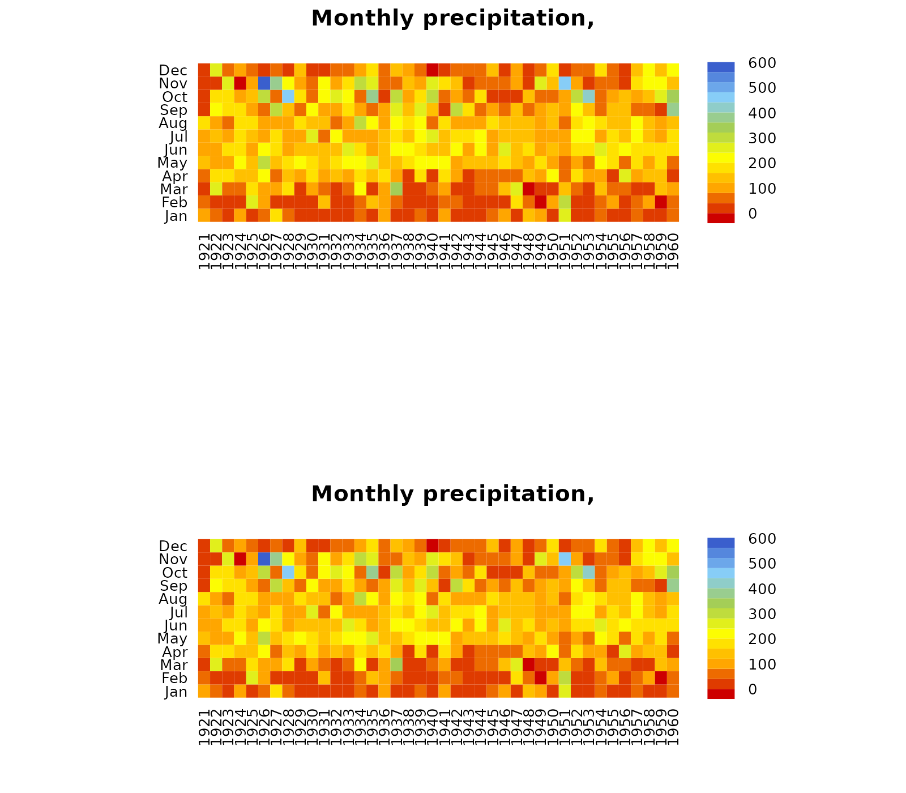
The second and easier way allows you to obtain the same previous figure (not shown here), but you are required to install the gridExtra package:
if (!require(gridExtra)) install.packages("gridExtra")## Loading required package: gridExtra
require(gridExtra) # also loads grid
require(lattice)
grid.arrange(p, p, nrow=2)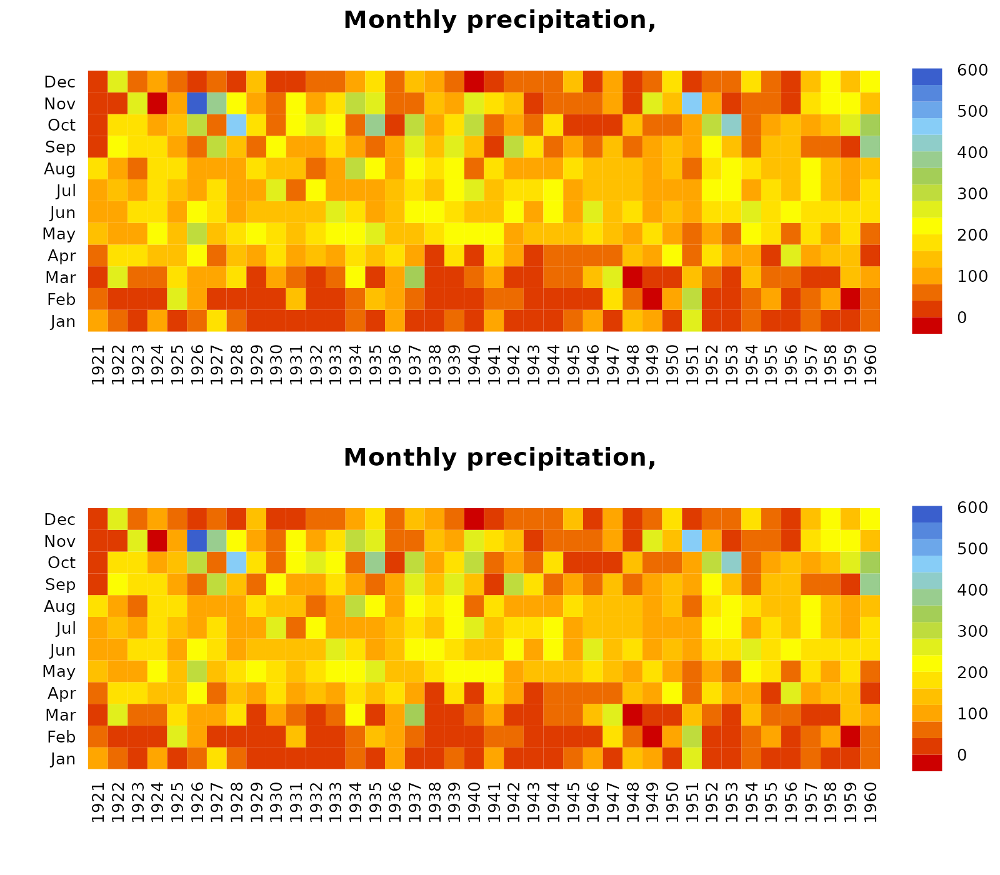